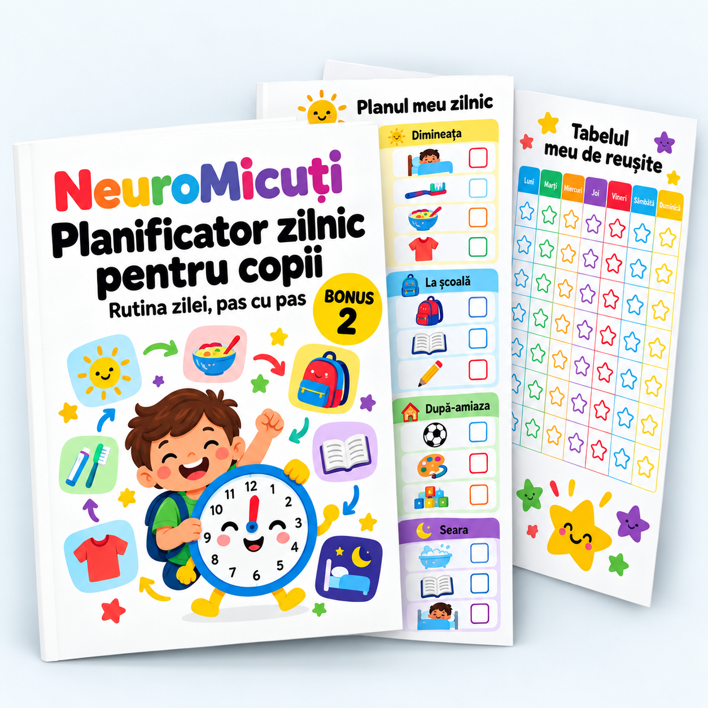

Copilul tău va ști ce urmează fără să mai întrebi sau să mai negociezi.
Copiii nu se opun rutinei — se opun incertitudinii. Când știu ce urmează, colaborează.
| Vârsta | Format potrivit | Sfat |
|---|---|---|
| 3-5 ani | Doar imagini (pictograme simple) | Desenați împreună pictogramele |
| 6-8 ani | Imagini + cuvinte scurte | Copilul poate scrie singur activitățile |
| 9-14 ani | Tabel cu text + ore orientative | Lasă-l să-și aleagă ordinea activităților |
Dimineața, școala, după-amiaza, seara — fiecare cu pașii lui clari.
Nu trebuie să umpleți fiecare minut. 4 momente-ancoră sunt de ajuns ca ziua să aibă structură.
Nu controlezi ce se întâmplă la școală, dar poți pregăti copilul cu o frază de încurajare:
„Ce lucru bun vrei să se întâmple azi la școală?"
Seara, verifici: „S-a întâmplat?"
Un sistem simplu de recompense vizuale care menține motivația fără pedepse.
Stelele nu sunt pentru performanță — sunt pentru efort. Copilul primește stea pentru că a încercat, nu pentru că a reușit perfect.
| Obicei | L | Ma | Mi | J | V | S | D | Total |
|---|---|---|---|---|---|---|---|---|
| 10 min NeuroMicuți | ⬜ | ⬜ | ⬜ | ⬜ | ⬜ | ⬜ | ⬜ | /7 |
| Check-in emoțional | ⬜ | ⬜ | ⬜ | ⬜ | ⬜ | ⬜ | ⬜ | /7 |
| Citit seara | ⬜ | ⬜ | ⬜ | ⬜ | ⬜ | ⬜ | ⬜ | /7 |
| Temele fără stres | ⬜ | ⬜ | ⬜ | ⬜ | ⬜ | ⬜ | ⬜ | /7 |
Momentul potrivit din zi face diferența între „n-avem timp" și „e deja un obicei".
| Momentul | Avantaj | Pentru cine |
|---|---|---|
| Înainte de teme | Încălzire mentală — copilul intră focusat | Copii 6-14 ani cu teme zilnice |
| Dimineața devreme | Creierul e cel mai receptiv | Copii matinali care se trezesc repede |
| După gustare | Pauză naturală, fără presiune | Copii 3-6 ani care nu au teme |
3 pagini gata de printat: rutina zilei, tabelul cu stele și planul săptămânii.
| Moment | Ce fac | ✓ |
|---|---|---|
| ☀️ Dimineața | Trezire → Igienă → Mic dejun → Check-in → Plecare | ⬜ |
| 🌤️ După școală | Gustare → NeuroMicuți 10 min → Teme → Joacă | ⬜ |
| 🌙 Seara | Cină → Igienă → Borcan bucurii → Citit → Stele → Somn | ⬜ |
Săptămâna: _________________
| Obicei | L | Ma | Mi | J | V | S | D |
|---|---|---|---|---|---|---|---|
| _______________ | ⬜ | ⬜ | ⬜ | ⬜ | ⬜ | ⬜ | ⬜ |
| _______________ | ⬜ | ⬜ | ⬜ | ⬜ | ⬜ | ⬜ | ⬜ |
| _______________ | ⬜ | ⬜ | ⬜ | ⬜ | ⬜ | ⬜ | ⬜ |
| _______________ | ⬜ | ⬜ | ⬜ | ⬜ | ⬜ | ⬜ | ⬜ |
| _______________ | ⬜ | ⬜ | ⬜ | ⬜ | ⬜ | ⬜ | ⬜ |
Total stele: _____ / 35 Recompensă: _________________________
| Ziua | Activitate NeuroMicuți | Categorie | Făcut? |
|---|---|---|---|
| Luni | _______________ | _______________ | ⬜ |
| Marți | _______________ | _______________ | ⬜ |
| Miercuri | _______________ | _______________ | ⬜ |
| Joi | _______________ | _______________ | ⬜ |
| Vineri | _______________ | _______________ | ⬜ |
| Sâmbătă | _______________ | _______________ | ⬜ |
| Duminică | _______________ | _______________ | ⬜ |
Printează cele 3 șabloane de mai sus. Completează rutina zilei împreună cu copilul tău — lasă-l pe el să aleagă ordinea activităților unde e posibil.
Apoi deschide materialul principal NeuroMicuți și alege prima activitate pe care o faceți mâine în cele 10 minute.